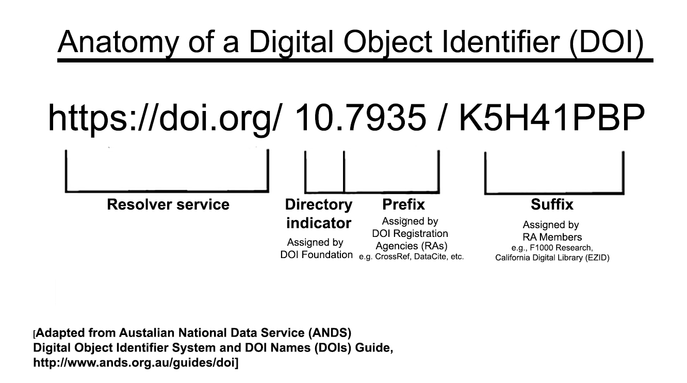

20 Minutes
curljqpandocDigital Object Identifiers (DOIs) are unique names assigned to information resources (including research papers and datasets) that are represented in some way on the Internet. DOIs represent an established international information standard, ISO26324:2012, and many publishers, data centers, and other information providers rely on this standard to assign unique identifiers for works under their care. The DOI assigned to a given research object distinguishes it from other works, including other versions of the same intellectual material. Examples of research-related information resources assigned DOIs include journal articles, curated datasets, theses, conference papers, pre-prints, technical reports, and books.
DOIs are actionable on the Internet: when put in URL form (https://doi.org/{DOI}, these strings automatically redirect to an online landing page that offers information about the research object. Often, but not always, the landing page contains a link to the resource itself. Where the resource is not online, the landing page indicates where to find it. For example, a DOI assigned to a physical resource such as a print book, a museum specimen, or a scientific sample will specify the repository or collection where that item resides.
The DOI is NOT by itself a seal of quality. Yet information resources that are assigned DOIs tend to be of enduring value; are likely to be used and cited by others; and are maintained by a publisher or other information provider who is committed to curating and preserving the resource over time. Because an organization is committed to curating the resource over time, the DOI is considered persistent. Some say that the DOI is basically a promise to always supply information about the information resource associated with the identifier.
A DOI is considered a persistent identifier because it reliably resolves to a human- and machine-readable landing page representing the information resource. But the DOI itself is not a guarantee that the dataset or paper is available via Open Access: rather, the DOI resolves to an Open Access landing page that may (or may not) permit linking through to the desired object. Whether or not a user can access the full content depends on various circumstances unrelated to the DOI system: format of the resource, restrictions and conditions governing access; authentication requirements; software compatibility; etc.
Nonetheless, the metadata associated with the DOI is rich enough to provide useful data for researchers. DOI metadata can tell alot about what has been published, who has published it, what works it cites, under what conditions the work was created and distributed (with what funding, whether the work is available open access, whether the work has been updated since publication, and more.)
In this session we’ll explore the anatomy of a DOI, how it is generated, and how to retrieve the rich metadata associated with a given research object and its DOI.
Finally, we will add to our command line repetoire by practicing a few new tools to help us acquire, examine, and use scholarly metadata available on the Web.
curl: a unix command for transferring data from or to an Internet server without human interaction. We will use curl to retrieve data from a DOI database and to negotiate for data in the format most convenient for our use.jq: a command-line tool that allows us to parse data in JSON (Javascript Object Notation) format. JSON is great for machines to understand but looks like gobbleygook to most humans. We will use jq to ‘pretty print’ data we retrieve from the DOI databasepandoc: a ‘swiss-army knife’ tool for converting a document in one markup format to another format. We will use pandoc to convert html data we retrieve with curl to a .docx format for clean reading and printing. (NOTE: In other AuthorCarpentry lessons, pandoc is used to convert markdown (.md) files into nicely typeset .pdf format for electronic and print.)curl to interact with a World Wide Web site and retrieve a document from that site to a file on your desktop. Then display the file on your terminal.$ curl http://thinkchecksubmit.org/check/ -o think.html
$ less think.html
What is the format of the retrieved content? Change the file extension to reflect the format of this web document
pandoc$ pandoc -o think.docx think.html
Please note .docx instead of .doc, otherwise it doesn’t work. Launch LibreOffice: how does the document look now? Will printing this document in this format look different than if you print it directly from the website?
TIP: Feel free to send yourself a copy of this useful handout on how to assess whether a journal is reputable or not
curl to retrieve data from the DOI database, CrossRef, and save to a file on your desktop. Then display the file on your terminal.$ curl -o shen.txt https://api.crossref.org/works/10.1186/s12916-015-0469-2
$ less shen.txt
What is the format of the retrieved content? Change the file extension to reflect the type of format this data is in.
$ jq . filename_from_previous_step > shen_pretty.json
Now that you can read the file more easily, you should be able to answer the following questions:
$ curl -LH "Accept:text/x-bibliography; style=apa" https://doi.org/10.1186/s12916-015-0469-2
(For example, the ORCiD researcher profile system and certain funding agencies’ submission systems accespt bibtex citations).
$ curl -LH "Accept:application/x-bibtex" https://doi.org/10.1186/s12916-015-0469-2 -o shen.bib
$ less shen.bib
Challenge question: how could you use a single command line tool to quickly combine these citations into one file representing your publication list?
Solution
$ cat file1.bib file2.bib file3.bib > publist.bib
HINT: You need to use content negotation with the DOI database to retrieve citations for each DOI you have. Then combine the individual citations into a single file.
Once you have a bibtex file with your DOIs and citations, you are ready to set up your ORCiD account and connect your author ID with your DOIs.`
The International DOI System is the overall infrastructure by which Digital Object Identifiers are assigned, registered, resolved, and associated with valuable metadata including citation, availability of full text, funder information, licensing information, and more. The following components of the DOI System together make it work:
The metadata associated with the DOI is often rich enough to provide useful data for a researcher. We’ll look at this data throughout the rest of the lesson.

Next: Register a DOI